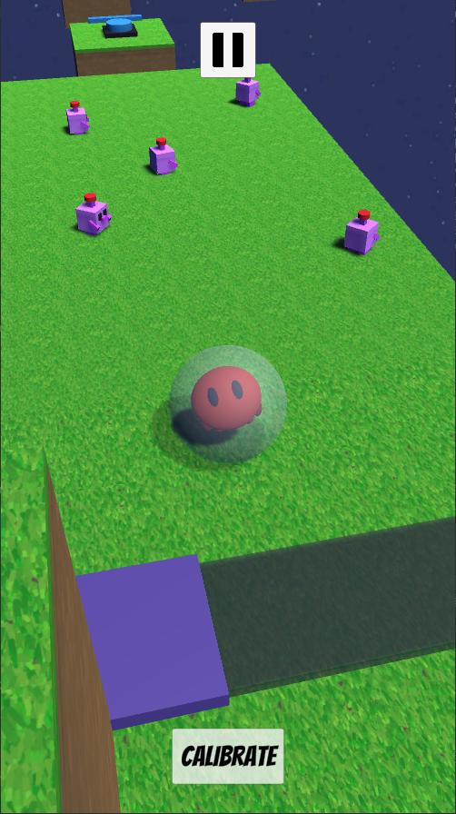
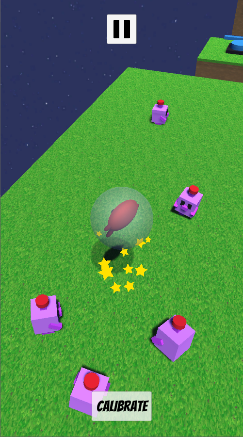
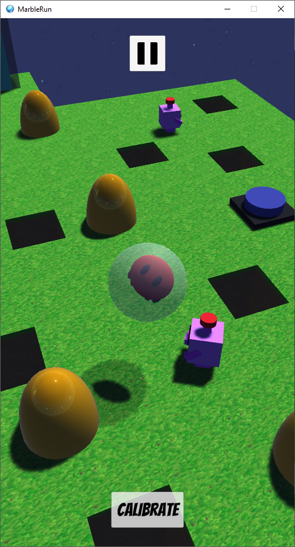

Our character is housed in a small glass marble in which he rolls around the map fighting against his enemies.
Enemies in the game will try to push us off the map, we can counterattack by pushing them by jumping on them.
The player will have to overcome various puzzles along the map to keep moving forward, activating with buttons either doors, bridges or flying platforms, even trampolines.
The player's ultimate goal in this prototype is to reach the end of the level and grab the star.